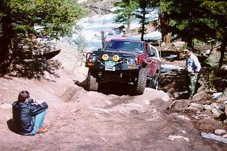

March 15, 1998
by Jacob and Heather McGhee
 Just as the sun was beginning to warm the gorgeous Colorado sky, a
group of fearless four wheelers met in the Red Rocks parking lot at
9:00 am. One could but look into this lot and see Terry Howe, Dave
Vest, Buffy the Dog, and Paul and Cindy Beaudean amid the sparkling
amber day. Being the extraordinarily gifted leader he is, Jacob
McGhee did indeed pick a wonderful day on which to challenge the Great
China Wall.
Just as the sun was beginning to warm the gorgeous Colorado sky, a
group of fearless four wheelers met in the Red Rocks parking lot at
9:00 am. One could but look into this lot and see Terry Howe, Dave
Vest, Buffy the Dog, and Paul and Cindy Beaudean amid the sparkling
amber day. Being the extraordinarily gifted leader he is, Jacob
McGhee did indeed pick a wonderful day on which to challenge the Great
China Wall.
This adventurous group met their first obstacle - glistening patch of
snow, a frosty barrier between themselves and their alpine destiny.
Recognizing it for what it was, their dashing leader defiantly winched
through the snow, revealing a clear passage to his faithful followers.
having defeated the opposing frost, the lively group climbed their
second obstacle - an unrelenting mass of murky rock. After this
most excruciating trial, Dave, a.k.a. the Courageous Mud Dancer,
conversed with Tess and Troy. Apparently, the daring duo had failed
to meet the group due to navigational errors. Forgetting this
embarrassing faux pas, a rendezvous point was quickly set. With
his team now united, Jacob the Bold led his group to an amazing
stream that Tess and Troy had already graced with their presence.
At this point, everyone forsook the cares of this treacherous world,
opting to revel in the unpretentious beauty of nature.

Experiencing such freedom of thought allowed the gallant group to
face once again a trying obstacle. They fearlessly fought the mud and
snow, coming forth as victors once more. Although Tess and Troy
encountered minor difficulties when coming up the hill, their trouble
paled in comparison to the immense knowledge that comes with adversity.
They recalled the famed words, "That which does not destroy us, makes us
stronger." It was then they were met with fellow travelers in a pick up
truck who were deciding whether or not to risk life and limb for the
opportunity to see nature at its wettest. In such a forthright manner,
Jacob declared, "Fear not, my stock driving friends! For you've enough
people to help push if you find yourselves stuck!" This encouragement
was all they needed, and the small group continued toward the
stream.
On their way back from the imperious mountain, Paul, a.k.a. the
Impeccable Hawkeye, dared Jacob the Bold to proceed up an unmerciful
looking snow bank. Laughing, this confident leader accepted the
challenge and emerged unscathed.
As the sunlight kissed the horizon once more, the spirited group of
four wheelers returned to their homes, having once again conquered the
good earth.